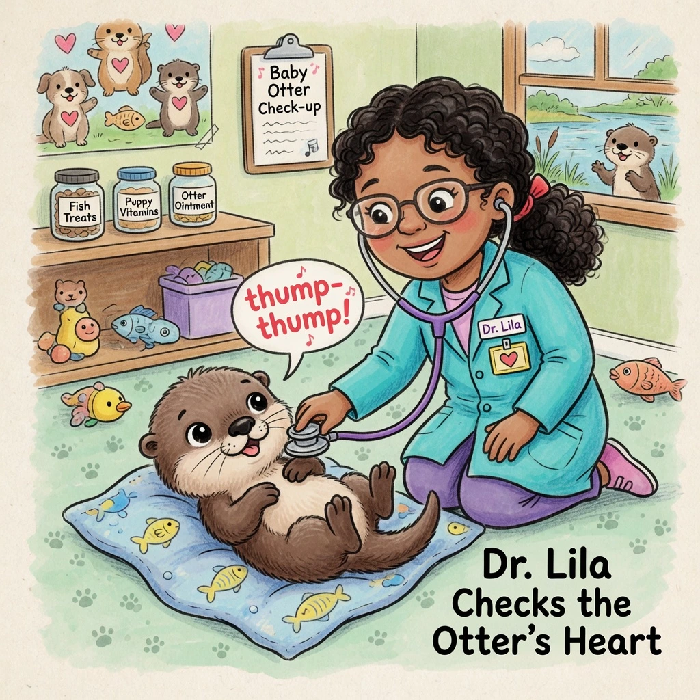

OPENAI / OFFICIAL IMAGE GUIDE
Veterinarian and baby otter
EXACT PROMPT
A children's book drawing of a veterinarian using a stethoscope to listen to the heartbeat of a baby otter.
ROUTE A / OPENAI
Codex image route
{kind=link}
Requestedgpt-image-2
Served identityNot exposed
Run facts
- Route
- Private Codex image-generation entitlement
- Requested size
- 1024 × 1024
- Admitted pixels
- 1313 × 1198
- Quality
- Medium requested
- Cost
- Included entitlement; amount not exposed
- Seed
- Route does not accept seed
- Admission
- Admitted; public bytes available
ROUTE B / xAI
Grok Imagine via Sub2API
{kind=link}

Admitted output
Requestedgrok-imagine-image-2.0
Served identityNot exposed
Run facts
- Route
- Private Sub2API image-generation route
- Requested size
- 1024 × 1024
- Admitted pixels
- 1024 × 1024
- Quality
- Medium requested where accepted
- Cost
- Paid route; amount not exposed
- Seed
- Provider-assigned; not exposed
- Admission
- Admitted; public bytes available
{kind=link}
{kind=link}